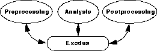
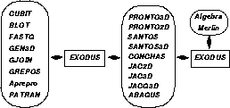
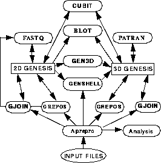

SEACAS System Overview
A subset of this format, called GENESIS2, was a precursor to the EXODUS format. GENESIS is often used in references and reports to refer to the mesh description portion of the EXODUS format.
We are currently upgrading the original EXODUS file format. EXODUS now refers to a generic format. When it is important to differentiate, the older sequential database is called EXODUS I and the newer randomly accessible, platform independent database is known as EXODUS II3.
Some codes have not yet migrated to the EXODUS II file format. The scripts that control the codes will automatically translate the input files to the required format. so that all of the preprocessing, analysis, and postprocessing codes can read and/or write the EXODUS database files formats as required. A schematic of this is shown in Figure 1.
FIGURE 1.x13 Modular Structure of SEACAS
With this structure, codes can be tailored for a single function. For example, an analysis code can be added to the system without writing new mesh generation and post processing programs. Also, code to code data transfers and restarts use the EXODUS format. A more complete view of this is shown in Figure 2.
FIGURE 2.x13 Expanded Modular View of SEACAS
This modular concept is used extensively in the mesh generation process. Several special-purpose codes have been written that each perform a certain mesh generation task. Examples of this are:
FIGURE 3.x13 Structure of Mesh Generation Process
All of the codes are written in as portable a form as possible. Fortran codes are written in ANSI Standard FORTRAN-774 and C language codes are written in ANSI Standard C5 where possible. Machine-specific routines are limited in number and are grouped together to minimize the time required to adapt them to a new system. SEACAS codes have been ported to several Unix systems including Cray, HP, Sun, Dec, Stardent, Convex, IBM, and SGI.
A code management system called
Generated with CERN WebMaker


This structure is shown in Figure 3 on the following page. Finite element meshes of complicated three-dimensional geometries have been successfully generated using this system built up of codes that singly provide a limited capability, but when used as a system are very powerful.

CVS6 is used for all of the SEACAS codes to provide traceability and retrievability for Quality Assurance. The change logs include who changed the code, when it was changed, what was changed, and why the change was made. If required, any previous version can be retrieved. SEACAS Code Types
SEACAS is divided into five broad categories of codes: prepost, analysis, translators, libraries, and scripts. The categories can be roughly defined as follows:
Preprocessing and Postprocessing Codes
The pre- and postprocessing codes are comprised of the following mesh generation, visualization, and database manipulation codes.
Analysis Programs
The analysis codes include quasistatic, transient dynamics, thermal, and electromechanics codes.
Translation Codes
The translation codes are used to convert EXODUS databases into different formats and to edit EXODUS databases.
In addition to the translation codes listed above, the Cray Unicos system provides the capability to translate EXODUS I files into a VMS and IEEE format using the exoexo code. EXODUS II files, being machine independent, need no such translations. Support Libraries
The support libraries include routines which are used in several of the codes.
Scripts
The scripts category is composed of the Unix shell scripts for executing the preprocessing, postprocessing, analysis, and translation codes; and the imake files required to install SEACAS. Constitutive Models
Many constitutive models are implemented in the analysis codes.
Not all of the constitutive models are implemented in all of the analysis codes. The quasistatic analysis codes typically implement the constitutive models using temperature-dependent properties to facilitate thermal-stress calculations.
SEACAS System Overview - 24 FEB 95
[Next] [Previous] [Top]